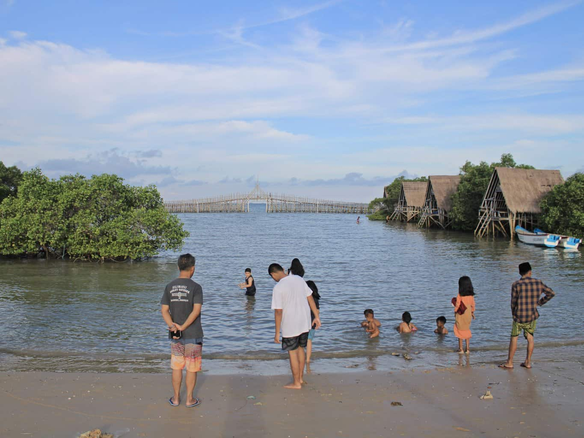
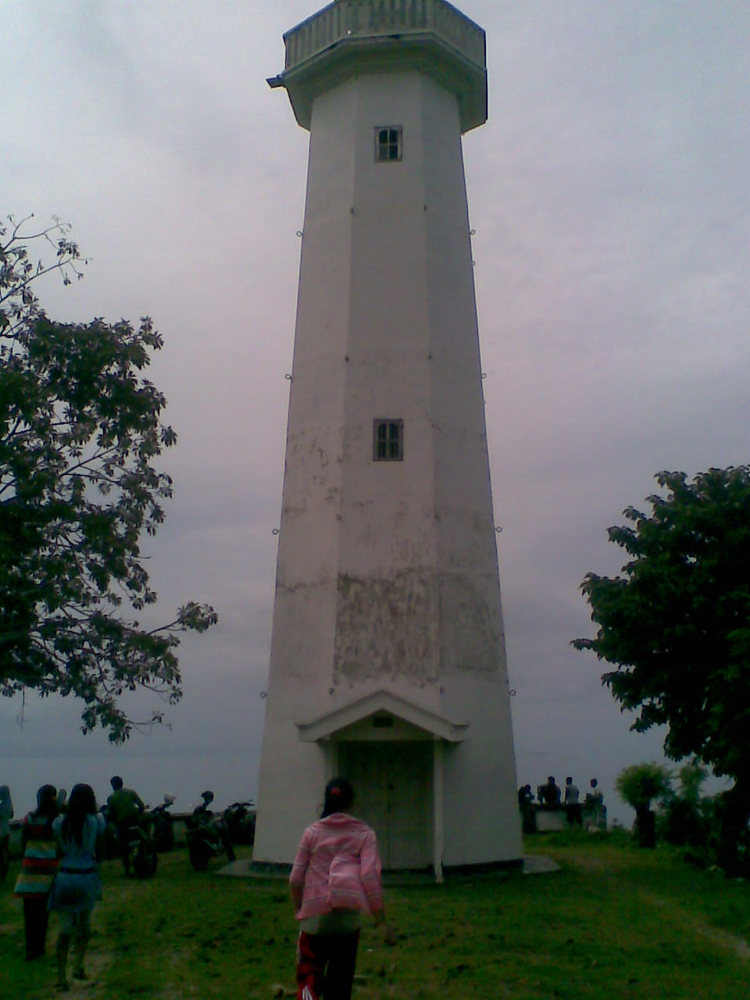
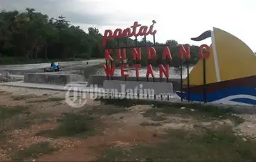
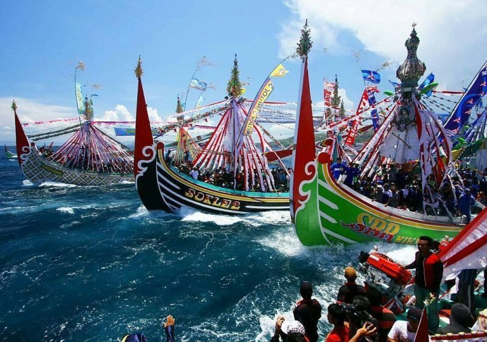

Pelabuhan Tanjung Saronggi
Ikon Desa Tanjung dengan pemandangan perahu nelayan tradisional. Cocok untuk sunrise, sunset, fotografi drone, dan jalur menuju Pulau Giligenting.
Selengkapnya
Pantai E Kasoghi
Destinasi wisata pantai unggulan dengan jogging track bambu, kawasan mangrove, gazebo, musala, toilet, kafe, cottage, dan camping ground.
Selengkapnya
Mercusuar Tanjung
Landmark pesisir Saronggi dengan panorama laut dan pemandangan Pulau Giligenting.
Selengkapnya
Pantai Kundang Wetan
Pantai alami dengan suasana tenang yang cocok untuk memancing, bersantai, dan fotografi alam.
Selengkapnya
Wisata Budaya Rokat Tase'
Tradisi petik laut masyarakat nelayan dengan arak-arakan perahu, pesta rakyat, dan kesenian Madura.
Selengkapnya